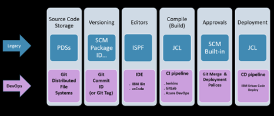
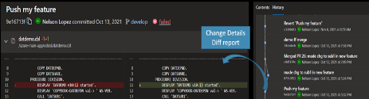
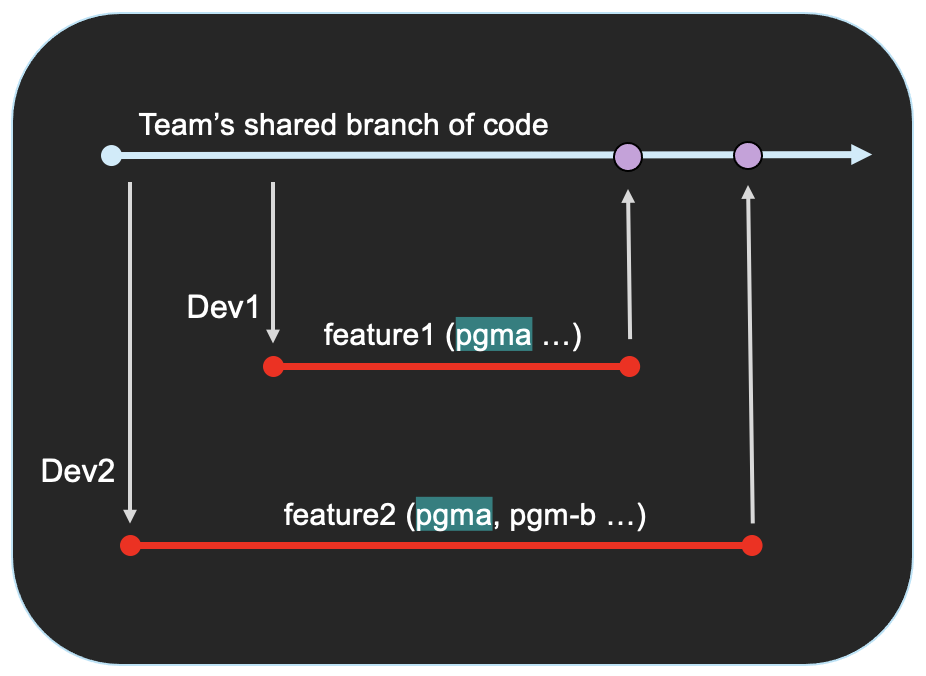

Source code management
A source code management (SCM) tool manages and stores different versions of your application configuration such as source code files, application-specific configuration data, test cases, and more. It provides capabilities to isolate different development activities and enables parallel development.
Git is the SCM for the IBM Z DevOps solution.
Why move to Git?
Git is the de facto industry standard SCM for the open source community and is growing in popularity among major organizations. It is a central part of the modern developer’s toolkit, and provides a common SCM tool for hybrid application architectures that can span across components ranging from those implemented in traditional mainframe languages such as COBOL, PL/I, or Assembler, to components for the service layer such as z/OS Connect, and components in Java and Go, to reflect the architecture of the business application.
Git integrates with most modern DevOps tools and pipeline processes to support the full development lifecycle from continuous integration (CI) to continuous delivery (CD). By migrating to Git as the enterprise SCM, mainframe application development teams can then take advantage of the open source community’s modern tooling.
Git in the software development lifecycle
The following diagram draws analogies between legacy mainframe SCM processes and DevOps with Git on z/OS.
It shows the key features of an SCM process, starting with source code storage, and ending with the deployment to the development or other upper environments such as Q/A and Production.

Git basics
Git is a distributed “version control system” for source code. It provides many features to allow developers to check in and check out code with a full history and audit trail for all changes.
Source is stored in repositories (also known as “repos”) on distributed file systems. An application repo can be copied (or “cloned”) between the central Git server (known as the “remote”) and any machine that has Git, including a developer’s local computer using popular integrated development environments (IDEs) such as IBM Developer for z/OS (IDz) and Microsoft’s Visual Studio Code (VS Code). This “clone” contains all the files and folders in the repository, as well as their complete version histories.
The developer can then create working copies of the repository code, which Git calls “branches”. For each task the developer has (such as a bug fix or feature), the developer would generally do their development work on a personal branch dedicated to that task. When they are ready to promote their changes, they can create what Git calls a “pull request” (also known as a “merge request” by some Git providers), which is a request to integrate (or “merge”) those changes back into the team’s common, shared branch of code.
With Git’s branching and merging features, changes can be performed in isolation and in parallel with other developer changes. Git is typically hosted by service providers such as GitHub, GitLab, Bitbucket, or Azure Repos. Git providers add valuable features on top of the base Git functionality, such as repository hosting, data storage, and security.
In Git, all changes are committed (saved) in a repo using a commit hash (unique identifier) and a descriptive comment. Most IDEs provide a Git history tool to navigate changes and drill down to line-by-line details in Git diff reports. The following image of an Azure Repos example setup shows the Git history on the right panel, and a Git diff report on the left.

Git branching
A Git “branch” is a reference to all the files in a repo at a certain point in time, as well as their history. A normal practice is to create multiple branches in a repo, each for a different purpose. Typically, there will be a “main” branch, which is shared by the development team. The team’s repository administrator(s) will usually set up protections for this branch, requiring approval for any change to be merged into it. The team might also have additional shared branches for different purposes, depending on their branching strategy. The repository administrator(s) can also set up branch protections for these branches, as well as any other branch in the repository.
All Git actions are performed on a branch, and a key advantage of Git is that it allows developers to clone a repo and create (check out) a new branch (sometimes called a “feature branch”) to work on their own changes in isolation from the main source branch. This lets each developer focus on their task without having to worry about other developers’ activities disturbing their work or vice versa.
When a developer wants to save their code changes onto a branch in Git, they perform a Git “commit”, which creates a snapshot of the branch with their changes. Git uniquely identifies this snapshot with a commit hash, and attaches a short commit message from the developer describing the changes. The developer (and any other teammates with access to the branch) can then use this commit hash as a point-in-time reference for the set of committed changes. They can later check out the commit hash to view the code at that commit point. Additionally, the code can also be rolled back (or “reverted”, in Git terminology) to any prior commit hash.
Git merge
Feature branching allows developers to check out the same code, and work in parallel and in isolation. Git merge is how all the code changes from one branch get integrated into another branch. Once developers complete their feature development, they initiate a pull request asking to integrate their feature changes into the team’s shared branch of code.
The pull request process is where development teams can implement peer reviews, allowing team leads or other developers to approve or reject changes. They can also set up other quality gates such as automated testing and code scanning to run on the PR. Git will automatically perform merge conflict detection to prevent the accidental overlaying of changes when the pull request is merged in. Development teams often have a CI pipeline that is triggered to run upon pull request approval/merge for the integration test phase.
Merge conflict detection: parallel development use case
One of the biggest benefits of using Git is its merge conflict detection. This is Git’s ability to detect when there are overlaps in the code changes during a merge process, so that developers can stop the merge and resolve the merge conflict. This merge conflict detection means that team members can merge their changes to the same program while avoiding unintentionally overlaying each other’s code.
To illustrate this example of parallel development, in the following diagram, Developer 1 (Dev1) and Developer 2 (Dev2) have each created their own feature branch from the same version of their team’s shared branch of code. Note that there are no commits (indicated by purple dots) on the team’s shared branch between when Dev2 and Dev1 created their respective feature branches. Now, each developer can work on their own feature in isolation: Dev1 has his feature1 branch where he is working on his copy of hte code, and Dev2 has her feature2 branch where she is working on her copy of the code.

Doing this kind of parallel development is complicated on legacy systems, especially with PDSs, because developers have to figure out how to merge the code at the end, especially when working on the same files. Additionally, legacy SCMs typically lock files that are being worked on. In contrast, Git branching allows the developers to work on the files at the same time, in parallel.
In the Git example illustrated above, Dev1 and Dev2 agreed to work on different parts of the same program, and they then each make their own pull request to integrate their respective chanages back into the team’s shared branch of code when they are ready. Dev1 has done this before Dev2, so his changes have been approved and merged in first. When Dev2 later makes her request to merge her code changes into the team’s shared branch of code, Git does a line-by-line check to make sure the changes proposed in Dev2’s pull request do not conflict with any of the changes in the shared branch of code (which now include Dev1’s changes). If any issues are found, Git will stop the merge and alert the developers of the merge conflict. Git will also highlight the conflicting code so that the developers know where to look and can resolve the conflict, most likely via another commit in Dev2’s branch.
Best practices
Common Git provider options
- GitLab
- GitHub
- Bitbucket
- Azure Repos
Resources
This page contains reformatted excerpts from Git training for Mainframers.